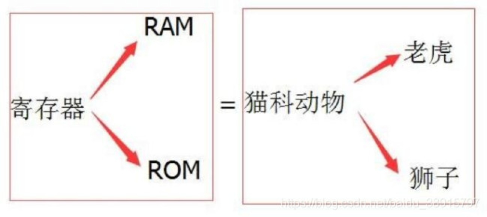
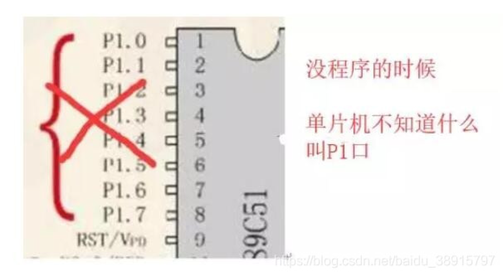
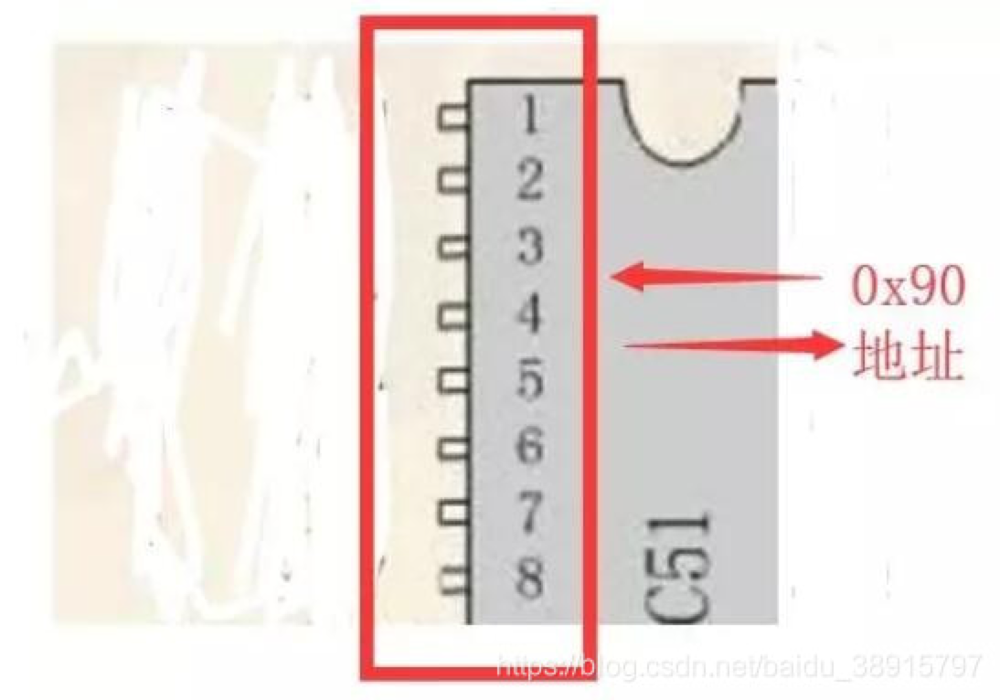
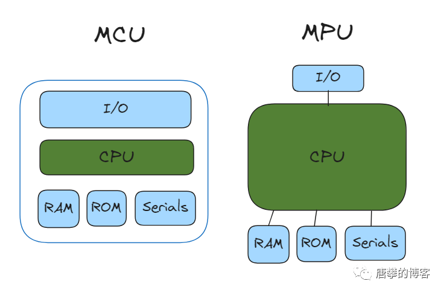
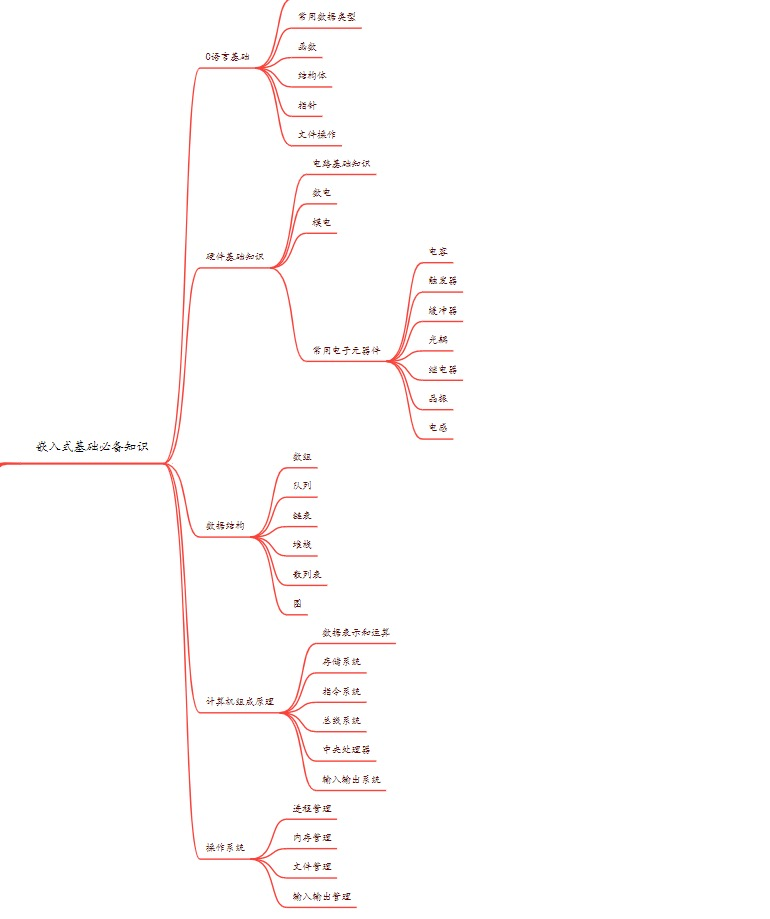
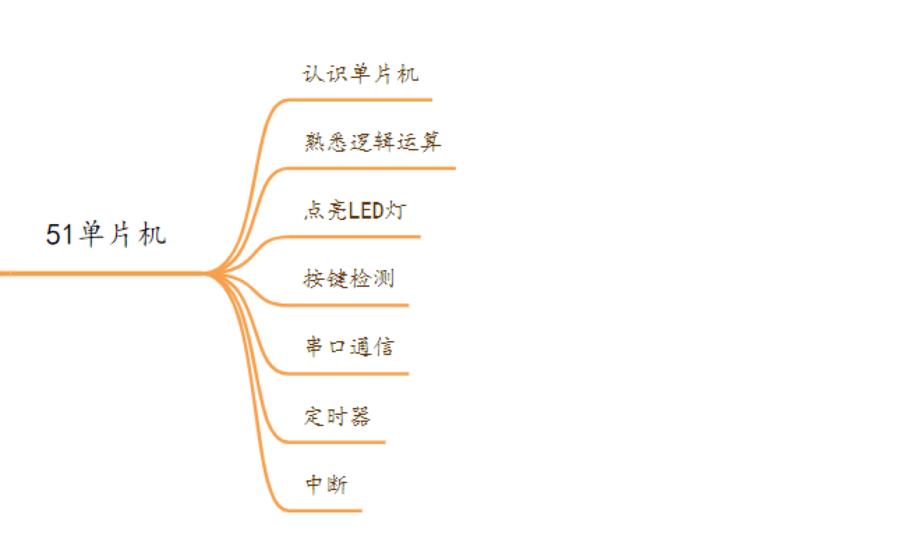
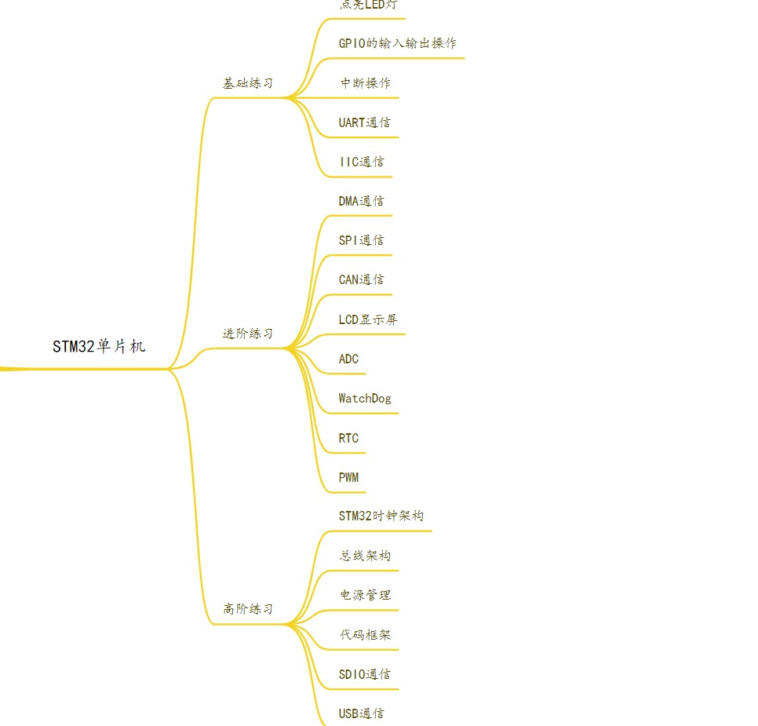
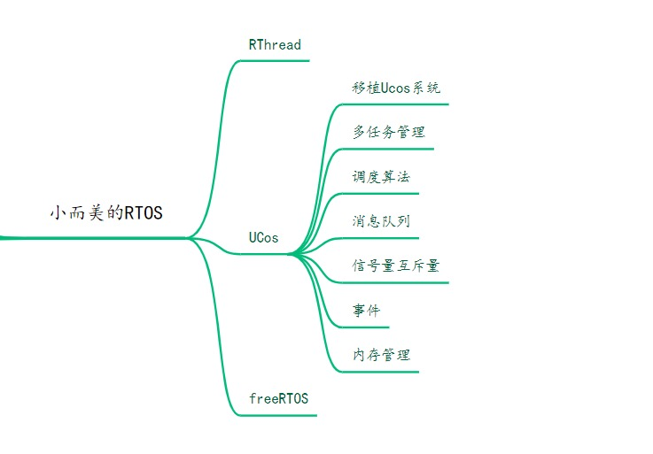
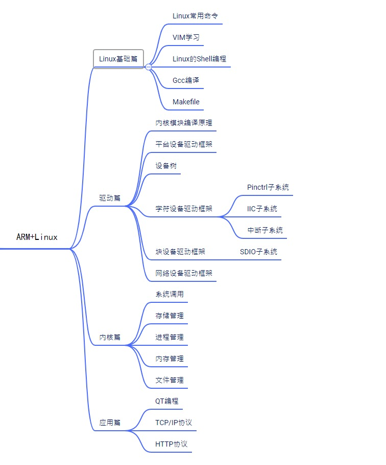

概述
- 本篇总结一些嵌入式 Linux 系统开发基础
一 各种基础概念
1 编译好的内核分为哪些模块
- 编译好之后的 Linux 内核分为内核文件 zImage、设备树文件、各类内核模块, 把他们替换到一台 Linux 主机上就可以替换整个系统内核
2 什么是交叉编译?
- 所谓交叉编译, 其中一个例子就是在 x86 CPU 的主机上编译一个可以在 Arm CPU 上可以运行的二进制文件, 有相应的工具链.
3 什么是 eMMC
-
eMMC 是 embedded MultiMediaCard 的简称。MultiMediaCard，即 MMC，是一种闪存卡(Flash Memory Card)标准，它定义了 MMC 的架构以及访问 Flash Memory 的接口和协议。而 eMMC 则是对 MMC 的一个拓展，以满足更高标准的性能、成本、体积、稳定、易用等的需求。
-
个人理解为嵌入式开发板上自带的闪存
4 什么是 SoC
- 单片系统或片上系统（英语：System on a Chip，缩写：SoC）是一个将电脑或其他电子系统集成到单一芯片的集成电路.
4.1 什么是 SFR
- 特殊功能寄存器（special function register,SFR）
4.2 物理地址和对应引脚的关系
-
这篇文章很有意思, 解释了物理地址和对应引脚的关系.
-
寄存器是 RAM 和 ROM 的统称. (说到底寄存器就是 RAM 和 ROM, 有物理地址, 比如 0x90. 而运维工程师由于常年接触线上服务器总以为 RAM 很大,少则 128GB 多则 384GB, 其实也有很多很多很小的 RAM)

-
- 就像猫科动物是老虎与狮子的统称一样
-
- ROM/RAM 对于玩电脑的人并不陌生，什么内存 3G（内存就是 RAM），- - 硬盘 100G（硬盘就是 ROM）
-
- 单片机里面和电脑一样，有 ROM 和 RAM 之分
一开始单片机没程序的时候，单片机不认得什么叫 P1 口

他只知道 P1 口的 8 只引脚，是连着内部地址 0x90

简洁来说就是，P1 口这些引脚就是 0x90 地址延伸出来的引脚，在没程序的情况下，单片机是不知道什么叫 P1 口的，他只知道 0x90 地址和外部的引脚就这么连着，你也可以拿着 0x80，0x90，这些地址去编写我们的程序，一个两个倒是无所谓，但是多几个你就会觉得很烦了
所以 sfr P1 = 0x90，就是把单片机的地址 0x90 改名字为 P1，方便我们使用，明白了吗？
一个弄明白后，剩下的一堆，你就懂了
sfr P1 = 0x90;
sfr P2 = 0xA0;
sfr P3 = 0xB0;
sfr PSW = 0xD0;
sfr ACC = 0xE0;
简单来了就是为 RAM 里面的地址改名字方便我们用
其实这些东西你不用过于研究的，你了解一下就可以，因为我们在写程序中肯定有一个 reg52.h 的头文件，因为定义名字这个事情就在这个头文件里面了，你会调用就行，不用过于研究。
总结如下:
- 在没程序的情况下，单片机是不知道什么叫 P1 口的，他只知道 0x90 地址和外部的引脚就这么连着，你也可以拿着 0x80，0x90，这些地址去编写我们的程序，一个两个倒是无所谓，但是多几个你就会觉得很烦了
-
所以 sfr P1 = 0x90，就是把单片机的地址 0x90 改名字为 P1，方便我们使用.
-
也就是说外设接入一台 Linux 主机后, 其实它的物理内存地址是固定的(这个是硬件设计的时候就做好的). 我们写驱动程序的时候, 最最底层就说去操作这些物理内存地址(取值、赋值、修改)
5 Linux 设备树（Device Tree）简介
5.1 DTS (device tree source)
.dts 文件是一种 ASCII 文本格式的 Device Tree 描述，此文本格式非常人性化，适合人类的阅读习惯。基本上，在 ARM Linux 在，一个.dts 文件对应一个 ARM 的 machine，一般放置在内核的 arch/arm/boot/dts/目录。由于一个 SoC 可能对应多个 machine（一个 SoC 可以对应多个产品和电路板），势必这些.dts 文件需包含许多共同的部分，Linux 内核为了简化，把 SoC 公用的部分或者多个 machine 共同的部分一般提炼为.dtsi，类似于 C 语言的头文件。其他的 machine 对应的.dts 就 include 这个.dtsi。
5.2 DTC (device tree compiler)
将.dts 编译为.dtb 的工具。DTC 的源代码位于内核的 scripts/dtc 目录，在 Linux 内核使能了 Device Tree 的情况下，编译内核的时候主机工具 dtc 会被编译出来，对应 scripts/dtc/Makefile 中的“hostprogs-y := dtc”这一 hostprogs 编译 target。 在 Linux 内核的 arch/arm/boot/dts/Makefile 中，描述了当某种 SoC 被选中后，哪些.dtb 文件会被编译出来。
5.3 Device Tree Blob (.dtb)
.dtb 是.dts 被 DTC 编译后的二进制格式的 Device Tree 描述，可由 Linux 内核解析。通常在我们为电路板制作 NAND、SD 启动 image 时，会为.dtb 文件单独留下一个很小的区域以存放之，之后 bootloader 在引导 kernel 的过程中，会先读取该.dtb 到内存。
- 将 dtb 反编译成 dts
$ dtc -I dtb -O dts -o .dts .dtb
或
$ dtc -I dtb -O dts .dtb > .dts
6 什么是烧写
- 具体的案例是: Windows 上使用专门的工具软件, 将编译好的 Linux 系统完整镜像文件(包括 uboot、zImage、设备树文件)烧写到开发板的 eMMC 或者 SD 卡上, 以完成整个系统替换的过程. 可以解决人为将开发板系统破坏导致系统运行不正常等问题.
- 烧写就是将写好的程序编译好形成 HEX 或 BIN 文件后，将这个程序写进单片机芯片的过程就叫烧写。 是沿用最早的单片机只能一次性写入，因此就叫做烧写。后来有了紫外线可擦除的 EEPROM，现在有了可随时擦除的 FLASH ROM，但依然沿用叫烧写了，这样也方便特指 PC 向 MCU 写入程序。免得和单片机工作时串口的上传和下次数据相混淆。
7 什么是 STM32
-
STM32 是意法半导体 (STMicroelectronics) 公司推出的新一代基于 Cortex-M 内核的 32 位微控制器系列。STM32 以其高性能、低功耗、一流的外设、简单易用等特点在近几年迅速发展，占领了很大市场，得到了很多开发者青睐。参考
-
stm32 的用途很广，我们身边随处可见。STM32 属于一个微控制器，自带了各种常用通信接口，比如 USART、 I2C、 SPI 等，可接非常多的传感器，可以控制很多的设备。比如智能手环，微型四轴飞行器，平衡车、移动 POST 机，智能电饭锅， 3D 打印机等等。小米的很多设备里都有使用 stm32。
-
STM32，从字面上来理解， ST 是意法半导体， M 是 Microelectronics 的缩写， 32 表示 32 位，合起来理解， STM32 就是指 ST 公司开发的 32 位微控制器。
8 什么是 GPIO
A 基础概念
- General Purpose Input Output(通用输入/输出.)
- GPIO 是通用输入/输出端口的简称，是 STM32 可控制的引脚。GPIO 的引脚与外部硬件设备连接，可实现与外部通讯、控制外部硬件或者采集外部硬件数据的功能。
- 其实 GPIO 的本质就是芯片的一个引脚，通常在 ARM 中所有的 I/O 都是通用的。不过由于每个开发板上都会设计不同的外围电路，这就造成 GPIO 的功能可能有所不同.
B GPIO 的 8 种输入输出模式
GPIO 共有 8 中输入输出模式，分别是：上拉输入、下拉输入、浮空输入、模拟输入、开漏输出、推挽输出、开漏复用输出、推挽复用输出 ，下面我们详细介绍以下上面的八种输入输出模式。
上拉输入： GPIO_Mode_IPU
下拉输入： GPIO_Mode_IPD
浮空输入： GPIO_Mode_IN_FLOATING
模拟输入： GPIO_Mode_AIN
开漏输出： GPIO_Mode_Out_OD
推挽输出： GPIO_Mode_Out_PP
开漏复用： GPIO_Mode_AF_OD
推完复用： GPIO_Mode_AF_PP
9 什么是 FPGA
A 基础前提
- 要知道 CPU、GPU、FPGA 三者能力相加就是芯片的未来！
- FPGA 门槛之高在芯片行业里无出其右。
- FPGA 是一个本领群集型的行业，没有坚实的本领功底，很难造成有角逐力的产物。
B 基础概念
1 FPGA
-
FPGA 是一种硬件可重构的体系结构。它的英文全称是 Field Programmable Gate Array，中文名是现场可编程门阵列。
-
FPGA 是一个可以通过编程来改变内部结构的芯片.
- FPGA 应用场景:
-
- 1 用作专用芯片（ASIC）的小批量替代品，
-
- 2 同时也在微软、百度等公司的数据中心大规模部署，以同时提供强大的计算能力和足够的灵活性。
2 IP 核
FPGA 有个最重要的概念就是 IP 核。
-
IP(Intelligent Property) 核是具有知识产权核的集成电路芯核总称，是经过反复验证过的、具有特定功能的宏模块，与芯片制造工艺无关，可以移植到不同的半导体工艺中。
-
如果还不理解，你就当他是一个软件模块，或者是一个积木的部件。
-
比如赛灵思已经基于 FPGA 设计好了 UDP 核、PCIE xDMA 核、UART 核，我们只需要把人家的核添加到我们工程中，那么就相当于与我们的板子已经支持了这个功能。
-
对于 FPGA 开发软件，其提供的 IP 核越丰富，用户的设计就越方便，其市场占用率就越高。
-
一句话：IP 核很值钱！
C FPGA 与 GPU 的区别
- FPGA 与 GPU 的区别本质上是体系结构的区别
-
CPU、GPU 都属于冯·诺依曼结构，指令译码执行、共享内存。
-
FPGA 本质上是无指令、无需共享内存的体系结构。
10 MCU 和 MPU
10.1 是什么
- MCU（Microcontroller Unit）和 MPU（Microprocessor Unit）是两种不同类型的嵌入式处理器
- 一个是微控制器、一个微处理器

10.2 区别
-
1 用途
-
- MCU：MCU 通常用于嵌入式系统中，这些系统需要执行特定的控制任务，如传感器数据采集、自动控制、嵌入式设备控制等。它们专注于实时控制和低功耗操作。
-
- MPU：MPU 更类似于通用计算机处理器，通常用于执行更复杂的通用计算任务，运行操作系统以及支持各种应用程序，如智能手机、个人电脑、服务器等。
-
2 处理器核心
-
- MCU：MCU 通常使用较简单的处理器核心，如基于 RISC（精简指令集计算机）架构的核心。这些核心专注于执行嵌入式控制任务，通常性能较低。
-
- MPU：MPU 使用更强大的通用处理器核心，具有更高的性能和更复杂的指令集，适用于通用计算任务。
-
3 内存和存储
-
- MCU：MCU 通常具有较小的内存和存储容量，足以支持嵌入式控制任务，但不适用于运行大型应用程序或操作系统。
-
- MPU：MPU 通常具有更大的内存和存储容量，以支持运行复杂的应用程序和操作系统。
-
4 外设和接口
-
- MCU：MCU 通常集成了特定于嵌入式控制任务的外设和接口，如模拟/数字转换器（ADC）、串口通信（UART）、定时器等。
-
- MPU：MPU 具有更丰富的外设和接口选项，包括 USB、以太网、高级图形接口等，以支持多种外部设备和连接。
-
5 功耗
-
- MCU：MCU 通常具有较低的功耗，因为它们经常用于电池供电的设备和需要长时间运行的嵌入式系统。
-
- MPU：MPU 通常具有较高的功耗，因为它们设计用于高性能计算和多任务处理。
-
6 成本
-
- MCU：MCU 通常价格较低，适用于大规模生产和成本敏感的应用。
-
- MPU：MPU 价格通常较高，适用于更复杂和高性能的应用。
-
选择 MCU 或 MPU 取决于您的项目需求，包括性能、功耗、成本和功能等因素。如果您需要执行嵌入式控制任务，MCU 可能是更合适的选择。如果您需要运行复杂的应用程序和操作系统，MPU 可能更适合您的需求。
二 待解决的问题
三 嵌入式学习路线
其一
一、基础
1. linux 基本操作：
需要掌握的知识如下：
- 1 环境的搭建：ubuntu、vmware 安装
- 2 Linux 目录结构；
- 3 文件类型；
- 4 基本目录操作，文件操作，vim，ifconfig，ping，cd，cp，mv，mkdir 等，最关键是 gcc 命令要会用；
- 5 一些简单的 shell 脚本；
- 6 Makefile 的编写。
个人建议只要会一些基本的操作就行了，不需要太深入的学习每一个命令，用到的时候会去搜索就行了。
参考文章如下：
- 《Linux 入门的基础知识点汇总，有这篇就够了》
- 《linux 驱动、ARM 学习环境搭建》
- 《Linux 入门-shell 编程-适合小白》
- 《一键获取 linux 内存、cpu、磁盘 IO 等信息脚本编写，及其原理详解》
2. c 语言：
所谓编程不学 C 语言，便称码农也枉然。
学 Linux，不学编程，建议就不要学了，否则职业后期全是瓶颈。
那些和你说学 Linux 不需要懂编程的都是再耍 LM。
学习 C 语言一定要学习 Linux 下 C 编程，C 语言网上视频也很多，知识点不一一介绍了。
但是有一点，就是一定要记住，一般的程序员从入门到绝对的精通大概需要 2 年时间，要想随心所欲写出超高质量的代码，时间因人而异，还要看个人造化。
实际上并不需要每个人都成为大师，能成为一个快快乐乐的小码农，不也是见开心的事吗？
3. 数据结构：
数据结构很重要，但是在这个上面花太多时间，也是没必要的。想进大厂的除外，自己拼命去刷题吧。对于嵌入式方向来说，个人建议只要掌握几个基本的排序和查找算法即可，没必要把所有算法都研究一遍。
- 《玩转内核链表 list_head，如何管理不同类型节点的实现（万字文）可以收藏》
- 《十大经典排序算法(代码实现)，建议收藏》
- 《20 张图揭开「队列」的迷雾》
-
《二叉树详解，非常全，还包含 C 代码》
-
- 能掌握常见的算法比如：冒泡排序、直接插入排序、快速排序、二叉树等。
-
- 链表：双向链表，增删改查。
4. 基础阶段项目
基础阶段，个人强烈建议一定要做一个综合性项目，一定要从 0 开始写。
建议项目《电话本管理软件》
该项目包含的知识点、功能点：
- 包含简单的菜单功能
- 链表：包括增、删、改、查、排序等操作的双向链表。
- 结构体、数组、指针、二级指针，字符串操作
- 排序
- 用户登录
- 用户电话号码信息的添加、删除、修改
二、进阶
进阶阶段知识点很重要，学完这个阶段的内容，我们就可以用各种库函数+系统调用来自己实现 Linux 命令：ls、cd、stat、pwd、ifconfig，甚至自己实现一些网络协议：tftp、ftp、http。 即使以后不做 linux c 开发，有了这些基础，你再去学 java、c++你的视野一定会不一样，Linux 下系统编程是真正基于一个胸痛来编程的。 为什么我们要学 Linux，就是因为他的开放性，有无数的大牛在给 Linux 添砖加瓦，所有代码都可以看到，而我们根本不用担心版权问题！
1. 文件 IO
- 掌握 Linux 文件 IO 的一套系统调用 API：open、read、write、lseek，close 等。
- 熟练写出文件拷贝等功能模块。
- 理解 I/O、缓冲的概念。
在 Linux 下，一切皆文件，我们操作操作许许多多的外设（字符设备、套接字、文件等等）就像操作文件一样。要想知道如何操作文件和外设，我们就必须熟练掌握文件 IO，这是我们学习 Linux 下面编程最基本的知识点。
2. 进程线程
- 进程与线程的概念
- 掌握常用的函数 fork、exec 族函数等 api；
- 进程创建、回收，一个.c 源文件变成可执行程序的过程；
- 常用的进程相关命令：ps、top、crontab、at；
- 进程间通信：信号量、消息队列、共享内存、管道、信号；
- 守护进程；
- 线程创建、同步互斥，互斥锁；
- 库的概念，什么是动态库和静态库，如何自己制作动态库和静态库。 进程、线程是我们学习 Linux 下系统编程非常重要的一个知识点，必须掌握。
参考文章如下：
- 《多线程详解，一篇文章彻底搞懂多线程中各个难点》
- 《Linux 中常见同步和互斥机制设计原理 》
- 《Linux 信号量（1）-SYSTEM V》
- 《Linux 信号量（2）-POSIX 信号量》
- 《Linux 互斥锁（1）-线程互斥锁》
- 《进程组、会话、控制终端关系，守护进程详解》
- 《 一个多线程的简单例子让你看清线程调度的随机性粉丝提问》
- 《Linux 库概念，动态库和静态库的制作，如何移植第三方库》
- 《 两个线程，两个互斥锁，怎么形成一个死循环？ 粉丝提问》
- 《用了这么多年 Linux，你清楚控制台、终端与 shell 及它们的关系吗？》
- 《多线程详解，一篇文章彻底搞懂多线程中各个难点》
- 《子进程进程的父进程关系》
3. 网络编程
- TCP/IP 协议分层以及每一层的功能；不要看 OSI，只要知道即可；
- socket api 的使用，
- tcp、udp；C/S 架构如何创建；
- 套接字属性的设置；
- C/S 架构；
- 多进程、多线程网络服务器模型；
- 任意一款抓包工具使用；
- 常见的网络协议分析：ping、 tftp、 ftp、http、telnet 等。
网络的重要性不言而喻，应用实在太广了，网络的知识也非常的复杂：网络编程、TCP/IP 协议栈、网络拓扑、网卡驱动、各种无线通信协议。
可以收每一大块知识的学习，都需要很长一段时间来入门，并需要一定难度的项目做支撑，才能真正了解和掌握网络。对于嵌入式方向初学者，我们最好先了解一些基础的网络协议知识，然后学习套接字的使用。
参考文章如下：
- 《22 张图详解浏览器请求数据包如何到达 web 服务器（搞懂网络可以毕业了）》
- 《一个端口号可以同时被两个进程绑定吗？ 》
- 《【粉丝问答 7】局域网内终端是如何访问外网？答案在最后 》
- 《一文包你学会网络数据抓包 》
- 《【视频】教你如何抓取网络中的数据包！黑客必备技能》
- 《网络/命令行抓包工具 tcpdump 详解 》
- 《【粉丝问答 11】如何在内网搭建 TCP 服务器并能被外网直接访问》
4. 进阶项目
该阶段可以选择综合项目《多线程聊天室》，实现公聊、私聊、注册登录，互相发送文件等功能。
一口君已经把这个项目拆解成 4 篇文章，并提供源码，方便大家入门。
《从 0 实现基于 Linux socket 聊天室》
三、高阶
该阶段学习需要开发板配合，建议新手先把之前内容打扎实，再进入这个阶段学习。 开发板的选择，最重要的是资料！资料！资料！资料！资料！资料！资料！资料！ 资料不全的板子不要买！
1. ARM
- arm 架构、arm 的模式、arm 指令，寻址，异常，中断，异常向量表，
- 伪指令、C 语言和汇编代码的互相调用、内联汇编；
- 学会查看常见电路图，了解数据线、信号线、地址线、中断线，常见外设电路图
- 学会查看各种芯片的用户手册
- 常见的外设的裸机驱动开发，led、key、adc、pwm、rtc、看门狗、i2c、spi、网卡、flash、USB 等
这个阶段的内容，对于了解整个计算机软件的工作原理非常重要，Linux 内核的很多机制都要依赖汇编指令，尤其 ARM 工作模式、寻址、异常，中断，异常向量表这些概念。可以说，掌握了这个阶段的内容，那么单片机、STM32 真的就是手到擒来了！
大家也可以参考我写的《ARM 系列文章》
B 站正在更新这个系列的视频教程，
纯奶妈式教学，只要有 C 基础，绝对学得会！ https://space.bilibili.com/661326452
2. 系统移植
- uboot 移植、uboot 参数设置
- rootfs 制作、内核剪裁移植，
- usb、网卡驱动移植，
- uboot、linux 启动流程，
- 自己添加 uboot 命令
这一阶段的内容对于嵌入式工程师来说，在做实际项目的时候，会经常用到，各个厂家的移植步骤会有所差异，但原理基本相同，熟练掌握这些操作，非常必要。
这部分内容其实很复杂，对于新手来说，建议会操作即可，工作后如果在深入研究，再回头研究这些细节。
参考文章
- 《【问答 23】移植 Linux：如何制作 rootfs？详细教程》
- 《19. Cortex-A9 uboot 启动代码详解必看》
- 《20.从 0 学 ARM-从 0 移植 uboot 支持 exynos4412-亲测》
- 《Linux 模块文件如何编译到内核和独立编译成模块？》
3. Linux 驱动
- 字符设备架构、inode、cdev、file_operations、file 之间关系；
- platform 总线、设备树；
- 内存管理；
- 同步互斥机制，自旋锁、信号量、互斥体，原子操作；
- Linux 进程管理
- 块设备
- 中断、中断底半部；
- 等待队列，poll 的实现；
- 常见设备的驱动的编写和代码分析；
- 网络设备：网卡驱动分析、netfilter 使用、网络协议栈架构；
- USB、TTY、SPI、IIC、PCIE 等架构。 能够学到这个阶段，那么恭喜你，你可以称为一名真正合格的嵌入式工程师了。
Linux 驱动我们学习 Linux 内核最好的一个入口， 在这庞大、浩瀚、错综复杂的内核代码中找到一个突破口， 从而真正走向大神之路！
驱动的学习，主要在于多捋架构，多阅读大牛的代码！
代码读百遍，其义自见！
代码中自由颜如玉，代码中自由黄金屋！
每天抱着内核看，像泡女人一样泡她，迟早你会成为大师。
驱动文章可以参考我写的《驱动集合》
也可以进入我的 B 站，一口君已经更新了《从 0 学 Linux 驱动第一期》 https://space.bilibili.com/661326452
四、终极
我想如果能学到这个份上，后面如何发展，已经不需要一口君再多费唇舌了，可以继续学习安卓、QT，也可以深挖物联网、算法，AI、VR、大数据或者钻研 Linux 内核优化内核等，每个领域独当一面，收入都不会低。
也衷心祝愿各位还能坚持到这个阶段的，头发依然保持茂密！
最后给大家一个建议，学习编程没有任何捷径可以走，需要花费几年的时间才能有所成，所以我们要提早做好规划，找好大方向，制定好短期、长期的计划，然后按照计划，一点点的实施。
其二
一 前言
最近看到 APP 上，给我推送了很多类似的回答，借此机会，也想着重新审视一下自己的学习历程，以及结合自身和大牛，分享一些学习经验，希望对大家有所启发和帮助。
本文主要目的是为了：
-
提供一张嵌入式学习路线地图
-
提供不同阶段的学习建议
-
推荐不同阶段的学习资料
3000 余字，耗时 1 周，建议收藏；码字不易，如有帮助，慷慨三连
本文将嵌入式学习路线分为几个方面：
-
嵌入式基础必备知识
-
51 单片机
-
STM32 单片机
-
小而美的 RTOS
-
ARM+LINUX
在这个快节奏的时代，能静下心，耐住性子看看文章，实属不易。
二 嵌入式基础必备知识
老子曰：“合抱之木，生于毫末：九层之台，起于垒土；千里之行，始于足下”，根基的重要性不言而喻。
那么对于嵌入式这条路线而言，如何建立一个稳固的根基？
2.1、学习内容

-
C 语言基础
-
- 该部分，主要包括几个核心知识点：三大语法结构、常用的数据类型、函数、结构体、指针、文件操作等。
-
硬件基础知识
-
- 该部分，核心知识点在于：电路基础知识、数电模电基础知识、常用的电子元器件等。
-
数据结构
-
- 核心知识点：数组、队列、链表、堆栈、树、图、散列表等。
-
操作系统
-
- 核心知识点：进程管理、内存管理、文件管理、输入输出管理等。
-
计算机原理
-
- 核心知识点：数据表示和运算、存储系统、指令系统、总线系统、中央处理器、输入输出系统等。
2.2、学习建议
对于 C 语言基础学习，一定要重点熟练掌握，根基的牢固直接决定了我们的代码质量。
对于硬件基础学习，要适当了解，要能够看懂一些简单的电路结构，认识常用的电子元器件。
对于数据结构学习，前五个是必备学习的，可能在刚开始学习的时候，可能会感觉不到作用在哪里，但是随着接触到嵌入式底层设计以及算法设计的时候，才会恍然大悟。
对于操作系统学习，重点学习其思想，对相关知识点有一个大概的了解，后续接触到继续重点学习，这些无论是 RTOS，还是 Linux，都有涉及到的。
对于计算机原理学习，可以将其看作是嵌入式系统的各个模块的详解，会让你对嵌入式有一个整体的了解，每一个部分都值得深究。
2.3、学习资料
-
C 语言基础：推荐经典书籍《C 语言程序设计》（第 2 版）谭浩强版本。
-
硬件基础：大学里面的《数电模电》书籍所涉及的知识即可。
-
数据结构：推荐经典书籍《数据结构》——严蔚敏版。
-
操作系统、计算机原理：我用的是《王道》的系列丛书，个人感觉不错。
计算机组成、数据结构、操作系统、数据库是嵌入式或者说计算机的入门必读书籍，并且也被列入高校教材内，是真正的基础知识。
以上，不一定是全部看完才能体验编程的乐趣，这个基础是一个循序渐进的过程，也不是一朝一夕就能完成的，可以先有一个大概，后续做项目时，哪里不懂补哪里！
这里涉及到一个重要的学习方法：项目导向的学习法。
三 嵌入式入门篇——51 单片机
3.1、学习内容

该部分，主要在最小嵌入式系统中，实现各种有趣的实验。通过 51 单片机的学习，我们要做到：
- 软件类：
主要知识点有：认识单片机、熟悉逻辑运算、点亮一颗 LED 灯、按键检测、串口通信、定时器、中断等。
- 硬件类：
主要知识点有：电阻元器件了解，基本模块电路了解，时钟电路，尝试绘制 51 单片机原理图和 PCB
3.2、学习建议
对于软件类，我们主要做到：认识单片机，熟悉单片机的 GPIO 的输入、输出操作，串口通信协议掌握等，这些部分都是任何一款嵌入式设备的必备技能。
对于硬件类：我们主要做到：能看懂电路图，熟悉一些简单模块的设计电路，了解Altium Designer的使用方法。
3.3、学习资料
51 单片机：郭天祥的 51 单片机教程，经典著作，经久不衰，强烈推荐。
庄子说：“水之积也不厚，则其负大舟也无力。“
该部分，是嵌入式领域的基石，只有将基础打牢，才能负得起 Linux 泰坦号。
四 STM32 进阶篇
STM32 是 C51 的进阶版，拥有 C51 的基础知识，开发 STM32 会得心应手。
STM32的系统架构以及硬件设计相比于 C51 来说，都是上升了一个维度的，这也是为什么我推荐入门学习 C51 的原因。
以STM32F407平台为基础，去学习目前嵌入式主流的一些技术，探寻底层的原理，做到不同平台，都能够得心应手。
4.1、学习内容

- 基础练习
该部分，主要练习：点亮 LED 灯、GPIO 的输入输出操作、中断操作、UART 通信、IIC 通信等
- 进阶练习
该部分，主要练习：DMA 通信、SPI 通信、CAN 通信、LCD 显示屏，ADC 等
- 高阶练习
该部分，主要学习：STM32 时钟架构、总线架构、电源管理、代码框架、SDIO 通信、USB 通信等。
4.2、学习建议
对于基础练习，主要目的是为了方便让我们从 C51 到 STM32 环境的过渡。
对于进阶练习，主要练习一些通信类相关的协议，可以结合一些传感器进行开发。
对于高阶练习，主要目的是为了熟悉单片机的设计架构，编程的框架，以及一些更复杂的通信技术。
另外，STM32 会有寄存器和库函数两个版本，建议交叉学习，理解会更加深刻。
4.3、学习资料
STM32 单片机：推荐正点原子、野火的 STM32F103 或者 STM32F407 系列。
两家的学习资料都非常丰富，既有详细的文档说明，也有完整的学习视频教程，非常适合新手入门学习。
俗话说：“有道无术，术尚可求，有术无道，止于术”。要明白道和术的区别，不要本末倒置。
五 小而美的 RTOS
RTOS，实时操作系统，可以理解为 STM32 与 Linux 之间的桥梁，由于其实现思想大都取之于 Linux，所以也称之为精简版的 Linux。
我们常用的有实时操作系统有：UCOS，VxWork，FreeRtos，近些年 RT-Thread 也异军突起。
学习这些简单的嵌入式系统，一来能够帮助我们为学习 Linux 操作系统打下基础，二来也能够扩宽我们的职业道路。
前面也说过了，无论是 UCOS、FreeRtos、Rt-thread，其内部的设计思想大同小异，下面主要以 Ucos 为例。
5.1、学习内容

- 实时系统学习
该部分，主要学习：移植 Ucos 系统、多任务管理、调度算法、消息队列、信号量互斥量、事件、内存管理等。
5.2、学习建议
- 对于实时系统学习，除了上述的那些核心知识点外，还要结合
2.1 基础必备知识的操作系统书籍加深理解。
5.3、学习资料
RTOS 的学习：依旧推荐正点原子，野火，因为这些实时操作系统开发，可以基于 STM32 开发板，同时也有非常详细的文档和视频教学。
六 ARM+Linux 篇
学习完RTOS后，基本嵌入式所涉及的技术已经掌握一半了，你也可以独立完成一些小的项目，也可以找到一个不错的工作，但是一定不要自我满足，有机会一定要接触 Linux。
还是那句话：ARM+Linux，也是最为复杂的东西，如果你不去接触Linux，你永远不知道嵌入式的魅力。
Linux 开发又分为驱动开发，内核开发，应用开发，每一个方向都需要几年甚至几十年的积累。
作为初学者，我们要做的就是宏观了解，扩大我们的知识面，然后去选择自己感兴趣的方面。
6.1、学习内容

- Linux 基础篇
该部分主要学习：Linux 常用命令、VIM 学习、Linux 的 Shell 编程、Gcc 编译、Makefile 等。
- 驱动篇
该部分主要学习：内核模块编译原理、字符设备驱动框架、平台设备驱动、设备树、Pinctrl 子系统、I2C 子系统、中断子系统、块设备驱动框架、Bootloader 等
- 内核篇
该部分主要学习：系统调用、存储管理、进程管理、内存管理、文件管理等。
- 应用篇
该部分主要学习：QT 编程、TCP/IP 协议、HTTP 协议等。
6.2、学习建议
对于基础学习，刚接触到Linux，一般比较难上手，与之前的单片机完全不同，需要一个熟悉环境的过程。
对于驱动学习，重要在于明白“如何在 Linux 环境下编写驱动程序”，驱动的底层原理还是那样，加了一层层的框架，需要我们去熟悉。
对于内核学习，上述也是系统的几大核心特色，重点在于"如何使 Linux 性能最优"
对于应用学习，上述的几个方面也是基础，重点还在于开发什么应用，去学习哪方面的知识，没有定论。
对于 Linux，有句老话“学习 Linux，3 年才算入门，5 年才勉强算 Linux 工程师，对于不太熟悉的领域，博主也不敢妄加断言。”
6.3、学习资料
对于基础学习，推荐《鸟哥的 Linux 私房菜》，《Unix 环境高级编程》等入门书籍。
对于驱动开发，推荐《Linux 设备驱动开发详解》，Linux 内核源码详解等。
对于内核学习，推荐《Linux Shell 脚本攻略》、《深入理解 Linux 内核》等。
对于应用开发，推荐《嵌入式 Linux 应用开发完全手册》、《Unix 网络编程》等。
另外，推荐正点原子，野火，韦东山三个 Linux 开发教程，韦老师的课程好评居多，但还是看哪个更适合自己。
七 总结
全文整体的学习路线：嵌入式基础学习 -> 51 单片机 -> STM32 单片机 -> RTOS 篇 -> ARM+Linux
纯软件, 25 岁巅峰, 35 岁被裁.
嵌入式, 29 岁巅峰, 45 ~ 50 岁被裁.
硬件工程师, 35 岁巅峰, 60 岁以后走下坡路.
四 如何成为一名优秀嵌入式 BSP 工程师
BSP 工程师招聘要求
五 SoC 启动流程
SOC (System on a Chip) bring-up 是一个复杂的过程，涉及到硬件、固件和软件的集成和验证，以下是一个基于 BROM，SPL，UBOOT 和 Linux 的启动流程的概述：
- BROM (Boot Read-Only Memory)启动：启动的最初阶段，在这个阶段，系统会执行芯片 ROM 里面的代码，这部分代码主要用来检查启动模式，包括 NOR、Nand、Emmc 等，然后从对应的存储介质中加载 SPL(Secondary Program Loader)代码。
- SPL (Secondary Program Loader)启动：SPL 属于 Uboot 的一部分，它的主要作用就是：初始化硬件并加载完整的 U-boot，主要体现在初始化时钟、看门狗、DDR、GPIO 以及存储外设，最后将 U-boot 代码加载到 DDR 中执行。
- U-Boot 启动：U-boot 的主要作用是：引导加载 Kernel 和 DTS。U-boot 在启动之后，同样初始化 Soc 硬件资源，然后会计时等待，并执行默认的启动命令，将 Kernel 和 DTS 信息从存储介质中读取出来并加载到内存中执行。
- Kernel 启动：在 U-Boot 加载了内核映像和设备树之后，系统会启动 Linux。在这个阶段，系统会初始化各种硬件设备，加载驱动程序并启动用户空间应用程序。